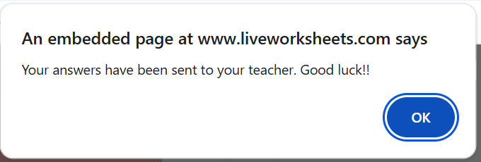

Langkah-langkah:
- Tunggu hingga lembar soal termuat sempurna.
- Hiraukan jika ada iklan muncul.
- Jangan muat ulang (refresh) halaman saat mengerjakan karena jawaban akan hilang jika di refresh.
- Soal dijawab dengan cara klik pada area jawaban lalu ketikan jawaban, jika ingin mengganti jawaban, langsung ganti saja (ketikan ulang) maka jawaban terakhir yang akan tersimpan
- Untuk soal checkbox, tinggal klik saja kotak pilihan lalu akan muncul icon ceklis.
- Jawab masing-masing soal sesuai pertanyaan.
- Jawab semua soal, lalu klik tombol "FINISH".
Contoh tampilan tombol "FINISH":
Lalu klik tombol "Submit"
Lalu klik tombol "Send Result"

Jika sudah muncul tampilan maka maka jawaban berhasil dikumpulkan